SPSS 26：SPSS 新界面评测
作者：Ruben Geert van den Berg，发表于 SPSS Blog
SPSS 26 提供了全新的界面和经典界面两种选择。我们下载并测试了新界面，本文将带您了解我们的主要发现。
- SPSS 26 - 我使用的是哪个“订阅”版本？
- SPSS 26 - 数据视图（Data View）和变量视图（Variable View）标签
- SPSS 26 - 菜单和对话框（Dialogs）
- SPSS 26 - 输出（Output）选项卡 - 表格和图表
- SPSS 26 - 分析目录（Analyze Catalog）
- SPSS 26 - 结论
SPSS 26 - 我使用的是哪个“订阅”版本？
在下载 SPSS 26 时，我们可以选择新的和经典的界面。IBM 网站 上提到的是“SPSS Subscription”，而不是“SPSS 26”，这有点奇怪。
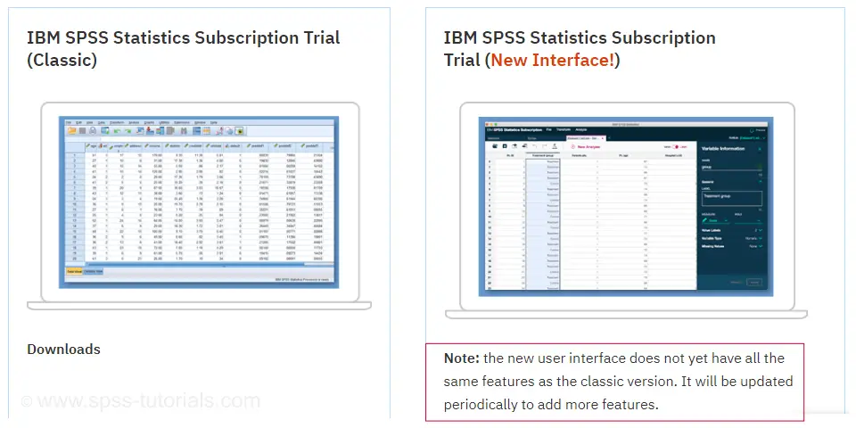
在下载之前，我们已经被告知新界面“尚未拥有所有相同的功能”，与经典版本相比有所欠缺。好吧，也许只是他们还需要改进一些细节。但他们应该不会发布一个半成品软件吧？
无论如何，我们安装了这两个版本，之后，我们的 SPSS 统计目录如下所示。
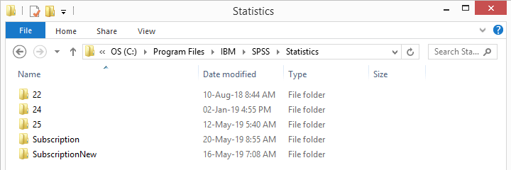
我原本期望看到一个名为“26”的子文件夹，但取而代之的是“Subscription”和“SubscriptionNew”，分别对应经典界面和新界面。这让我开始怀疑这真的是 SPSS 26 吗？对于 SPSS 25 及更早的版本，这一点总是很明确的：这些版本在启动或关闭程序时会显示其版本号。在会话中，导航到 H elp（帮助）  A bout（关于） 会显示确切的版本，例如 25.0.0.1。或者，运行
A bout（关于） 会显示确切的版本，例如 25.0.0.1。或者，运行 show license. 语法 也可以。
在新界面中，所有这些选项都只显示“IBM SPSS Statistics”。但是，当我们深入研究后端子文件夹时，我们找到了 stats.exe，即实际的应用程序。当我们悬停在文件上时，我们看到了这个：
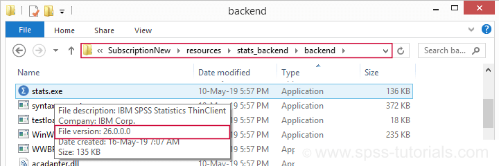
确实是 SPSS 26。但是，我为什么要确切地知道我的版本号呢？
- 如果我的 SPSS 版本中存在问题，我想在 Google 上搜索类似“SPSS 26 字体大小数据编辑器”的内容。如果我不能添加我的版本号，我将得到其他 SPSS 版本的解决方案，这些解决方案无法解决我的问题。
- 其次，如果我想帮助我的客户，他们的版本号会告诉我什么有效，什么无效。
- 最后，IBM 许可证密钥中心只为我提供 IBM SPSS Statistics Desktop 26 的授权码。它没有提到任何“Subscription”（见下文）。
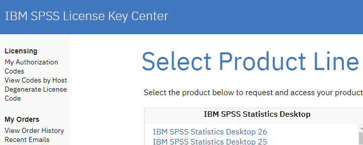
SPSS 26 - 数据视图（Data View）和变量视图（Variable View）标签
无论如何，我们下载并安装了带有新界面的 SPSS 26。打开一些数据后，我们得到如下所示的数据视图（Data View）选项卡。
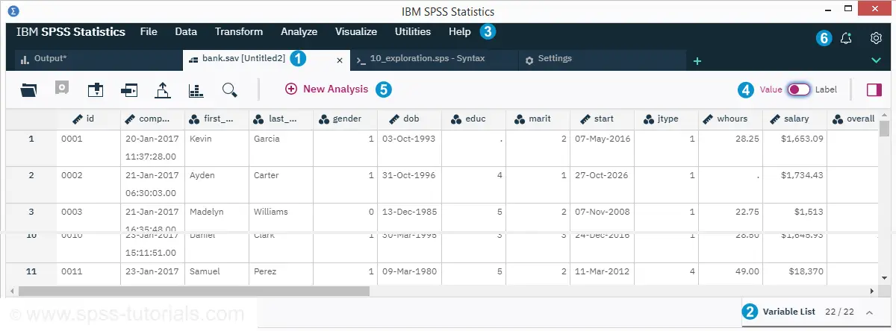
 新界面基于选项卡，而不是（数据、语法和输出）窗口。我们稍后会看到，设置和对话框（Dialogs）也以选项卡的形式出现。 变量视图（Variable View）位于数据视图（Data View）下方，单击后会向上滑动。我们没有找到任何快捷方式来执行此操作。 E dit（编辑）和 V iew（查看）菜单缺失。我想他们稍后会添加它们。但就目前而言，这确实是一个巨大的问题。 值/标签切换不切换值和值标签，而是切换变量名和变量标签。 添加了“分析目录（Analyze Catalog）”。 有通知和设置图标。但是，这些设置不包括之前 SPSS 版本中 E dit（编辑） Optio n s（选项） 下的基本设置。这些设置在新界面中似乎不可用。
新界面基于选项卡，而不是（数据、语法和输出）窗口。我们稍后会看到，设置和对话框（Dialogs）也以选项卡的形式出现。 变量视图（Variable View）位于数据视图（Data View）下方，单击后会向上滑动。我们没有找到任何快捷方式来执行此操作。 E dit（编辑）和 V iew（查看）菜单缺失。我想他们稍后会添加它们。但就目前而言，这确实是一个巨大的问题。 值/标签切换不切换值和值标签，而是切换变量名和变量标签。 添加了“分析目录（Analyze Catalog）”。 有通知和设置图标。但是，这些设置不包括之前 SPSS 版本中 E dit（编辑） Optio n s（选项） 下的基本设置。这些设置在新界面中似乎不可用。
SPSS 26 - 数据视图（Data View）问题
即使是对新界面的首次探索也导致了一些严重的问题。
- 首先，我的笔记本电脑具有 1920 x 1080 像素的屏幕分辨率。因此，字体大小在我的屏幕上太小了。由于没有 V iew（查看）菜单——设置更大字体大小的唯一方法——这使得新的数据视图（Data View）对我来说毫无用处。
- 其次，似乎无法同时打开多个语法选项卡。每当我打开另一个语法文件时，打开的语法选项卡会关闭，询问我是否保存其内容。
- 第三，我的 OUTPUT CLOSE 命令`` 触发了它不再可用的错误。这太糟糕了。我总是通过关闭所有打开的输出和数据集来启动新项目。我的一些客户也这样做。
- 第四，我喜欢在数据视图（Data View）和变量视图（Variable View）之间切换，但是——如前所述——
Ctrl+t快捷键不再起作用。
SPSS 26 - 变量视图（Variable View）
在 SPSS 的新界面中，变量视图（Variable View）被称为“变量列表（Variable List）”。它与数据视图（Data View）位于同一选项卡中，并在单击时向上滑动。不幸的是，它不再具有以前 SPSS 版本中清晰简洁的结构。
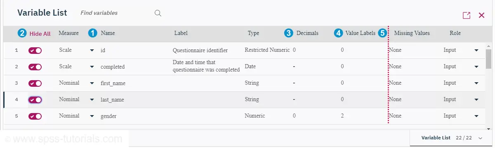
变量属性的顺序已更改，可见性和测量级别位于变量名之前。 隐藏变量的功能是一个受欢迎的新功能。但是，这样做的语法是什么？如何隐藏 v1 到 v25，但不隐藏 v26 到 v50？这不能需要点击鼠标 25 次，对吗？ 宽度（Width）和列（Columns）已被删除。但是，我们稍后会讨论这些内容。 值标签（Value Labels）列最终被称为“值标签（Value Labels）”而不是“值（Values）”。它现在显示为每个变量定义的标签数。 除了变量列表（Variable List）中奇怪的衬线字体外，对齐方式看起来也很奇怪：似乎某些列标题与其属性值左对齐居中。再加上删除了经典网格，这无助于形成一个美观清晰的界面。
我们还注意到，单击“类型（Type）”——它要么指的是变量类型或格式——会打开如下所示的对话框（Dialog）。
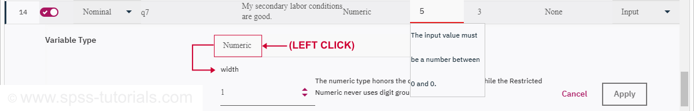
变量类型、宽度和格式在单击变量列表（Variable List）中的“类型（Type）”时显示。
请注意，设置格式和类型的更好方法是使用 FORMATS 和 ALTER TYPE 命令：这些命令可以一次寻址多个变量，并且它们是可复制的。
SPSS 26 - 菜单和对话框（Dialogs）
在大多数情况下，新菜单看起来像旧菜单，但不完整且重新组织得很糟糕。例如，让我们看一下 A nalyze（分析），如下所示。
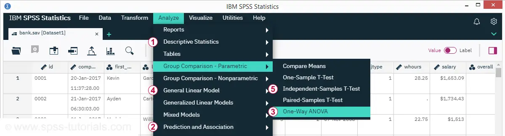
SPSS 中最受欢迎的分析是：
 卡方独立性检验 - 深度隐藏在 A nalyze（分析） D e scriptive statistics（描述性统计） Crosstabs（交叉表）下。
卡方独立性检验 - 深度隐藏在 A nalyze（分析） D e scriptive statistics（描述性统计） Crosstabs（交叉表）下。  相关性，现在隐藏在 Prediction（预测）和 Association（关联）下。 回归，也在 Prediction（预测）和 Association（关联）下。
相关性，现在隐藏在 Prediction（预测）和 Association（关联）下。 回归，也在 Prediction（预测）和 Association（关联）下。  方差分析（ANOVA），分散在 Group Comparison - Parametric（组比较 - 参数）和
方差分析（ANOVA），分散在 Group Comparison - Parametric（组比较 - 参数）和  General Linear Model（通用线性模型）上。 独立样本 t 检验 在 Group Comparison - Parametric（组比较 - 参数）下。
General Linear Model（通用线性模型）上。 独立样本 t 检验 在 Group Comparison - Parametric（组比较 - 参数）下。
那么为什么最流行的分析如此难以找到呢？它们不应该是 字面意义上的 “被寻找”。这些分析应该列在 A nalyze（分析）的顶层。然而，Correlate（相关）和 Regression（回归）实际上已从中 删除 。
SPSS 26 - 对话框（Dialogs）
新的对话框（Dialogs）看起来与以前的版本不同。让我们看一下下面的 Correlations（相关）对话框（Dialog）。
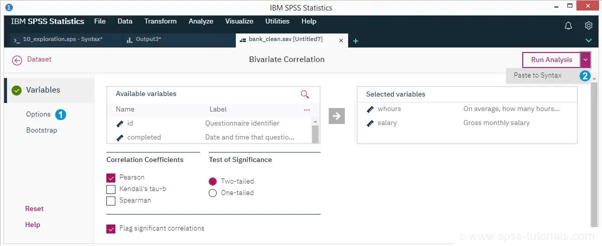
令人失望的是，选项（Options）仍然与以前的版本相同。而且它们不好：无论我们需要什么，我们 总是 在输出中获得所有显著性水平。相关性的置信区间 仍然 不可用。我们 仍然 无法选择是否在输出表中包含任何样本大小。 经典功能（例如“帮助（Help）”和“确定（OK）”）有点分散在对话框（Dialog）中。不幸的是，“粘贴到语法（Paste to syntax）”隐藏在“运行分析（Run Analysis）”下，因此现在需要点击 2 次而不是 1 次。基于 Alt 的快捷键和 Esc 也不再起作用。
SPSS 26 - 输出（Output）选项卡 - 表格和图表
运行分析后，我们将看到如下所示的输出（Output）选项卡。
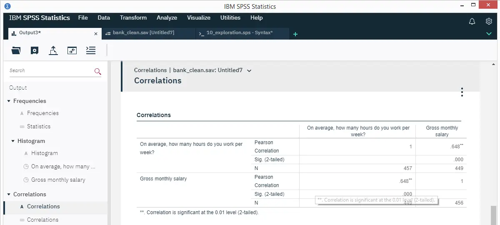
输出大纲看起来非常漂亮和干净。但是，当右键单击一个项目时，不会显示 OMS 标签。对于经验丰富的用户来说，这使得使用 OUTPUT MODIFY 批量编辑表格变得复杂。
相关表本身看起来比以前的 SPSS 版本好得多。但是，我们在这里也遇到了一些问题：
- 基本的表格编辑功能已消失。我们设法转置了表格，但我们无法通过 Pivoting trays（轴心托盘） 重新排列其维度。从 SPSS 的新界面几乎不可能达到相关表的 APA 标准。
- 表格外观（Tablelooks） 似乎不再起作用，无论通过菜单还是通过语法。
SPSS 26 - 图表
如下图所示，图表在 SPSS 26 中看起来仍然不太好。
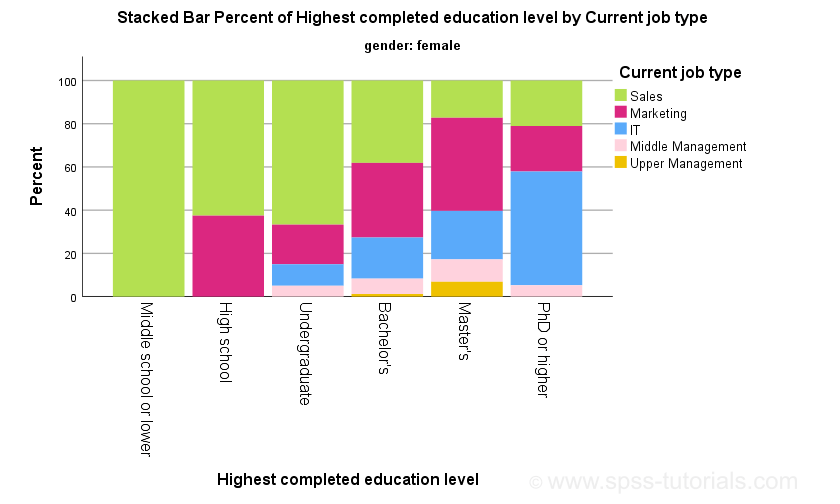
SPSS 25 中的新图表 - 它们真的有多好？ 中讨论的所有问题均未解决：y 轴上仍然没有百分号。标题仍然错误。等等。
更令人担忧的是，SPSS 26 的 Visualize（可视化）菜单仅包含图表构建器（Chart builder）。我当然希望很快会添加 旧对话框（legacy dialogs）：它们更简单，并且会生成简短而干净的语法，这些语法是可复制粘贴编辑的。
SPSS 26 - 分析目录（Analyze Catalog）
另一个新功能是分析目录（Analyze Catalog），如下所示。可以从数据视图（Data View）选项卡访问它。
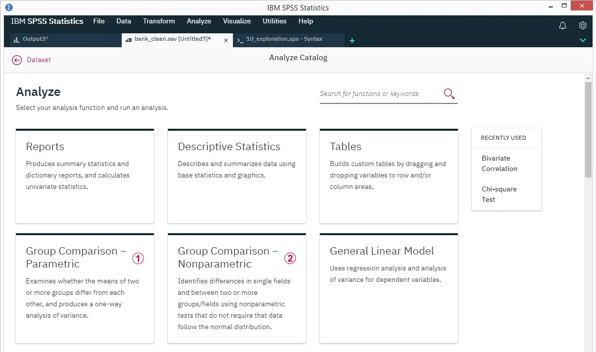
遗憾的是，此处的信息不完整且不准确。
例如，Group Comparison - Parametric（组比较 - 参数）没有提及任何 t 检验。此外，单样本 t 检验 和 配对样本 t 检验 不比较“两个或多个组”。旧的描述 - “比较均值（Compare Means）” 确实 适用于所有这些测试。
Group Comparison - Nonparametric（组比较 - 非参数）建议参数检验要求“数据服从正态分布”。这是错误的：对于合理的样本量，很少需要正态性假设。这就是 Kolmogorov-Smirnov 检验 通常无用的原因。
我认为：
- 不知道 该怎么做的 SPSS 用户需要针对教育目的优化的教育材料，并且
- 知道 该怎么做的 SPSS 用户需要针对生产目的优化的软件。
试图将这些冲突的目的结合起来的产品将在两者上都表现不佳。分析目录（Analyze Catalog）可以令人信服地说明这一点。
无论如何。我 确实 喜欢分析目录（Analyze Catalog）的一件事是搜索功能。所以我没有立即在菜单中的任何地方看到 ANOVA，但是搜索它肯定会立即将我带到那里。对吗？好吧，让我们看一下下面的搜索结果。
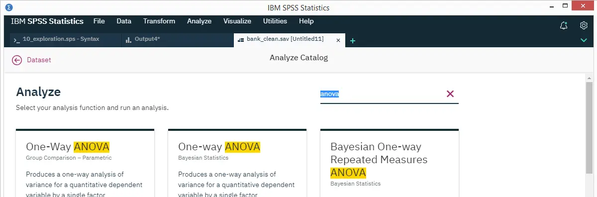
搜索结果将我带到 Oneway 对话框（Dialog），但没有带到 GLM 或 MEANS。这里的问题是：
- Oneway 不包括 partial eta squared，这是 ANOVA 的效应量度量。我们需要从 MEANS 或 GLM 运行我们的 ANOVA 才能获得它；
- 但是，MEANS 不提供用于同质性的 Levene’s test。我们需要 Oneway 或 GLM 来做到这一点；
- 如果同质性不成立，我们可能想解释 Welch 统计量，该统计量仅在 Oneway 中可用。
这里真正的问题是，完整的 ANOVA 无法从 SPSS 中的任何单个对话框（Dialog）或命令运行。相反，如果我们需要 所有 相关输出，我们需要从不同的命令多次运行单个分析。并且我们的搜索结果甚至没有提到 MEANS 或 GLM。
好的，那么让我们搜索一个更简单的分析：Kruskall-Wallis 检验。
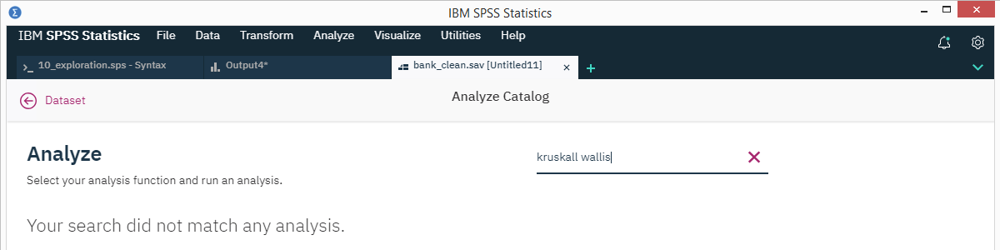
我的搜索没有任何结果。这是因为我测试了 “ Kruskal-Wallis test ” 的常见拼写错误。并且搜索功能似乎完全无法处理它。
SPSS 26 - 结论
总结一下这篇评测，我认为 SPSS 的新界面在基本上所有方面都 比 旧界面_更差_：
- 视觉布局——尤其是变量列表（variable list）和对话框（dialog）选项卡——不如以前清晰简洁；
- 基本功能——例如粘贴语法和主要分析——更难找到；
- 大多数操作需要比以前更多的鼠标点击；
- 许多快捷键不再起作用——尽管添加了一些用于导航和关闭选项卡的新快捷键。
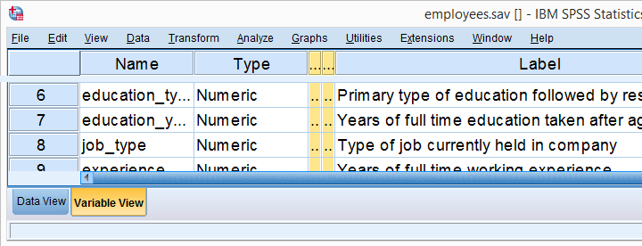 美观清晰的经典变量视图
最重要的是，新界面非常不完整。一些例子是：
- 查看（View）和编辑（Edit）菜单缺失；
- Visualize（可视化）下没有 Legacy Dialogs（旧对话框）；
- 用于重新排列数据透视表维度的轴心托盘（pivoting trays）不可用；
- 无法从输出大纲获得 OMS 信息。
其中一些可能会添加到新界面。但是 首先 完成产品 然后 发布呢？
无论如何，我同意 SPSS 迫切需要重大改进。这篇评测暗示了其中的一些，但还有更多。可悲的是，SPSS 真正 需要的所有东西都没有添加到 26 版本中。SPSS 并非 真正需要的一件事是新界面。
如果它没有坏，就不要修理它。
感谢您的阅读。